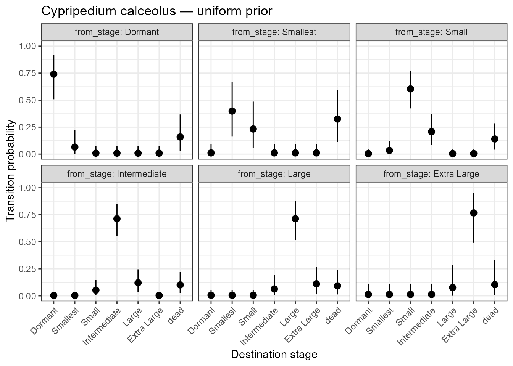
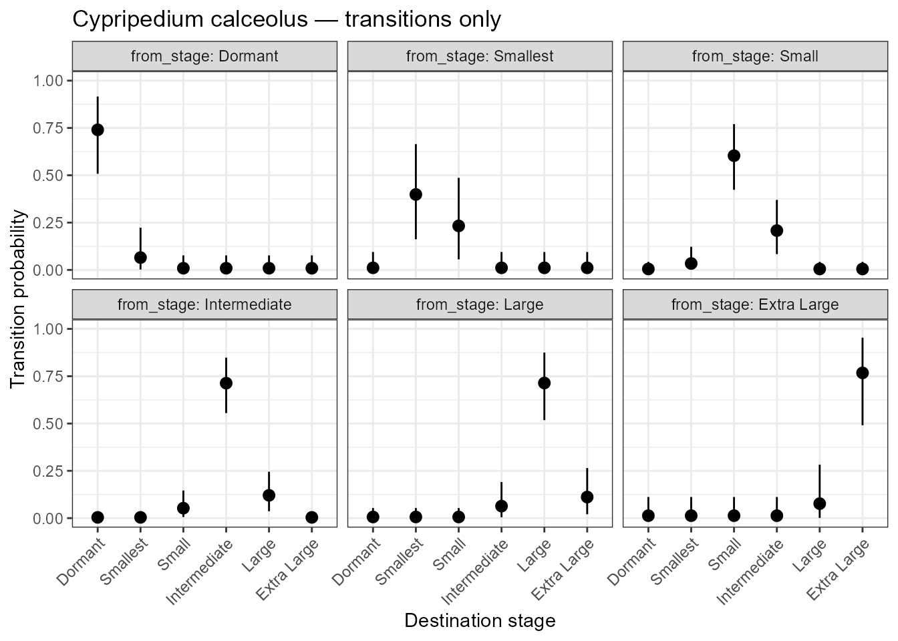
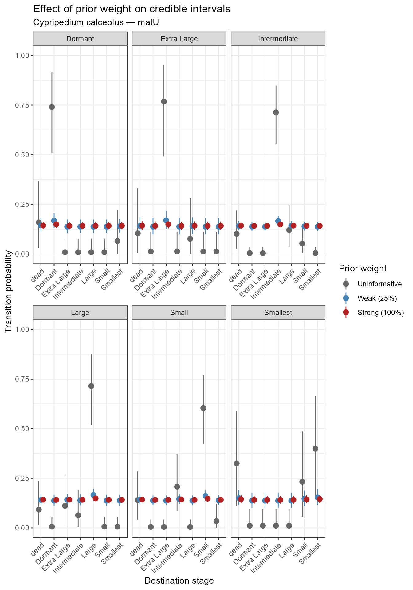
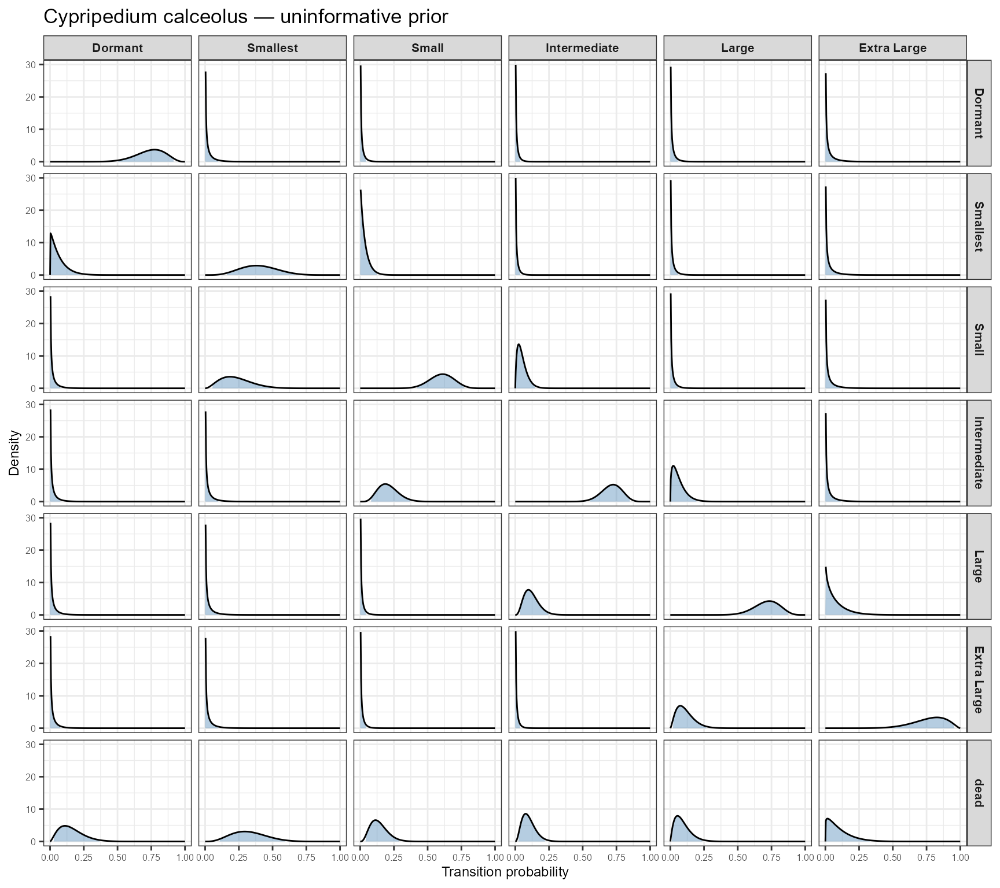
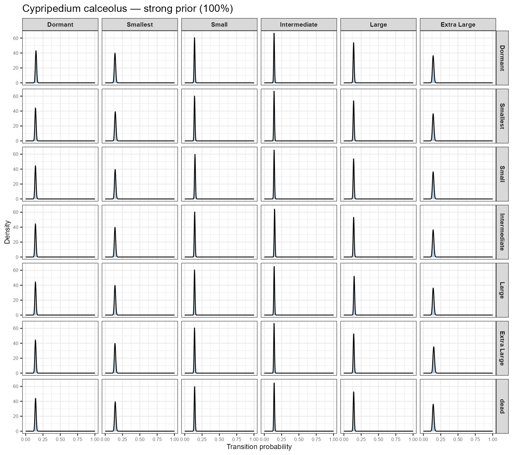
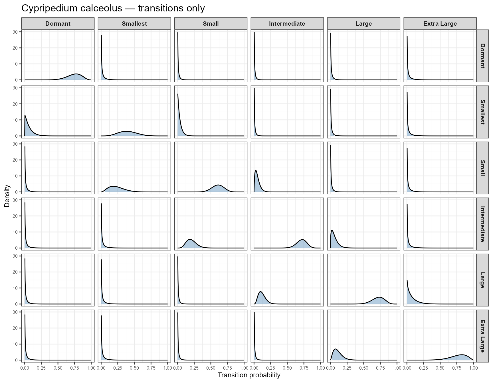

04 Credible intervals for transition probabilities: Cypripedium calceolus
Raymond Tremblay
2026-04-11
Source:vignettes/credible_intervals.Rmd
credible_intervals.RmdIntroduction
This vignette demonstrates how to use transition_CrI()
and plot_transition_CrI() to compute and visualise Bayesian
credible intervals for transition probabilities, and how the choice of
prior weight influences the posterior estimates.
We use a published transition matrix for the lady’s slipper orchid Cypripedium calceolus, a long-lived, clonal species of conservation concern in Europe. The matrix was extracted from the COMPADRE Plant Matrix Database (MatrixID 242623; Salguero-Gómez et al. 2015), originally published in Shefferson et al. (2001, Conservation Biology, DOI: 10.1111/j.1523-1739.2010.01466.x).
We use matU — the survival-and-growth sub-matrix —
which contains only transitions between living stages. This is the
appropriate input for raretrans, which models transition
probabilities using a Dirichlet-multinomial model.
The Cypripedium calceolus transition matrix (matU)
The population is structured into six stages: Dormant, Smallest, Small, Intermediate, Large, and Extra Large.
library(raretrans)
stage_names <- c("Dormant", "Smallest", "Small",
"Intermediate", "Large", "Extra Large")
# matU: survival and growth transitions only (matA = matU + matF + matC)
# Source: COMPADRE MatrixID 242623
# Shefferson et al. (2001) Conservation Biology
# DOI: 10.1111/j.1523-1739.2010.01466.x
matU <- matrix(
c(0.78, 0.00, 0.00, 0.00, 0.00, 0.00,
0.06, 0.42, 0.03, 0.00, 0.00, 0.00,
0.00, 0.24, 0.62, 0.05, 0.00, 0.00,
0.00, 0.00, 0.21, 0.73, 0.06, 0.00,
0.00, 0.00, 0.00, 0.12, 0.74, 0.07,
0.00, 0.00, 0.00, 0.00, 0.11, 0.83),
nrow = 6, ncol = 6, byrow = TRUE,
dimnames = list(stage_names, stage_names)
)
# Construct TF list (no fecundity in matU so F is all zeros)
F_mat <- matrix(0, nrow = 6, ncol = 6,
dimnames = list(stage_names, stage_names))
TF <- list(T = matU, F = F_mat)
# Observed stage distribution (number of individuals per stage)
N <- c(15, 12, 28, 34, 22, 10)
names(N) <- stage_names
matU
#> Dormant Smallest Small Intermediate Large Extra Large
#> Dormant 0.78 0.00 0.00 0.00 0.00 0.00
#> Smallest 0.06 0.42 0.03 0.00 0.00 0.00
#> Small 0.00 0.24 0.62 0.05 0.00 0.00
#> Intermediate 0.00 0.00 0.21 0.73 0.06 0.00
#> Large 0.00 0.00 0.00 0.12 0.74 0.07
#> Extra Large 0.00 0.00 0.00 0.00 0.11 0.83Note that the columns of matU do not sum to 1 — the
remainder represents individuals that died during the census interval
and is handled internally by raretrans as the implicit
“dead” fate.
Computing credible intervals
transition_CrI() computes the marginal posterior beta
credible interval for every entry of the transition matrix, including
the probability of dying. By default it uses a uniform (uninformative)
Dirichlet prior.
cri_uniform <- transition_CrI(TF, N, stage_names = stage_names)
head(cri_uniform, 10)
#> from_stage to_stage mean lower upper
#> 1 Dormant Dormant 0.740178571 5.077245e-01 0.91613465
#> 2 Dormant Smallest 0.065178571 2.004674e-03 0.22296240
#> 3 Dormant Small 0.008928571 2.479040e-13 0.07687983
#> 4 Dormant Intermediate 0.008928571 2.479040e-13 0.07687983
#> 5 Dormant Large 0.008928571 2.479040e-13 0.07687983
#> 6 Dormant Extra Large 0.008928571 2.479040e-13 0.07687983
#> 7 Dormant dead 0.158928571 2.993952e-02 0.36704515
#> 8 Smallest Dormant 0.010989011 3.077144e-13 0.09451638
#> 9 Smallest Smallest 0.398681319 1.620005e-01 0.66482995
#> 10 Smallest Small 0.232527473 5.577160e-02 0.48625501Each row gives the posterior mean transition probability and its lower and upper 95% credible interval bounds.
Visualising with plot_transition_CrI()
Including the dead fate (default)
plot_transition_CrI(cri_uniform,
title = "Cypripedium calceolus — uniform prior")
Posterior transition probabilities with 95% credible intervals for all fates including mortality.
Each panel shows the fate distribution from one source stage. Points are posterior means; vertical bars are 95% credible intervals. Wide intervals indicate stages with few observed individuals.
Excluding the dead fate
plot_transition_CrI(cri_uniform,
include_dead = FALSE,
title = "Cypripedium calceolus — transitions only")
Posterior transition probabilities excluding the dead fate.
Excluding the dead fate focuses attention on survival transitions between living stages, which is often more informative for life-history comparisons.
Effect of prior weight
The priorweight argument controls how much the prior
pulls estimates toward equal probabilities. A value of -1
(the default) uses a minimally informative prior. Positive values
express the prior weight as a percentage of the observed sample size —
for example, priorweight = 50 means the prior contributes
half as many pseudo-observations as the data.
This matters most for rare stages with few observed individuals, where the prior can have a strong regularising effect.
# Uninformative prior (default)
cri_uninf <- transition_CrI(TF, N,
priorweight = -1,
stage_names = stage_names)
# Weakly informative prior (25% of sample size)
cri_weak <- transition_CrI(TF, N,
priorweight = 25,
stage_names = stage_names)
# Strongly informative prior (100% of sample size)
cri_strong <- transition_CrI(TF, N,
priorweight = 100,
stage_names = stage_names)
# Compare interval widths for the Dormant stage
comp <- data.frame(
prior = c("Uninformative", "Weak (25%)", "Strong (100%)"),
mean_width = c(
mean(cri_uninf[cri_uninf$from_stage == "Dormant", "upper"] -
cri_uninf[cri_uninf$from_stage == "Dormant", "lower"]),
mean(cri_weak[cri_weak$from_stage == "Dormant", "upper"] -
cri_weak[cri_weak$from_stage == "Dormant", "lower"]),
mean(cri_strong[cri_strong$from_stage == "Dormant", "upper"] -
cri_strong[cri_strong$from_stage == "Dormant", "lower"])
)
)
comp
#> prior mean_width
#> 1 Uninformative 0.18199897
#> 2 Weak (25%) 0.06920945
#> 3 Strong (100%) 0.03521407
library(ggplot2)
cri_uninf$prior <- "Uninformative"
cri_weak$prior <- "Weak (25%)"
cri_strong$prior <- "Strong (100%)"
cri_all <- rbind(cri_uninf, cri_weak, cri_strong)
cri_all$prior <- factor(cri_all$prior,
levels = c("Uninformative",
"Weak (25%)",
"Strong (100%)"))
ggplot(cri_all,
aes(x = to_stage, y = mean, ymin = lower, ymax = upper,
colour = prior)) +
geom_pointrange(position = position_dodge(width = 0.5)) +
facet_wrap(~from_stage, scales = "free_x") +
scale_y_continuous(limits = c(0, 1)) +
scale_colour_manual(values = c("Uninformative" = "grey40",
"Weak (25%)" = "steelblue",
"Strong (100%)" = "firebrick")) +
labs(x = "Destination stage",
y = "Transition probability",
colour = "Prior weight",
title = "Effect of prior weight on credible intervals",
subtitle = "Cypripedium calceolus — matU") +
theme_bw() +
theme(axis.text.x = element_text(angle = 45, hjust = 1))
Effect of prior weight on credible interval width. Stronger priors narrow the intervals and pull means toward equal transition probabilities.
A stronger prior (red) shrinks credible intervals and pulls posterior means toward equal probabilities. For well-sampled stages (e.g. Intermediate, Large) the effect is small. For rare stages (e.g. Dormant, Extra Large) the prior has a more pronounced influence — a good reason to think carefully about prior choice when sample sizes are small.
Visualising full posterior densities
plot_transition_density() shows the complete marginal
posterior beta distribution for every transition, arranged as an (n+1) x
n grid mirroring the structure of the projection matrix. Columns are
source stages (from) and rows are destination stages (to), with the dead
fate as the bottom row. The shaded region shows the 95% credible
interval.
With uninformative prior
plot_transition_density(TF, N,
stage_names = stage_names,
title = "Cypripedium calceolus — uninformative prior")
Full posterior beta densities for all transitions with uninformative prior. Shaded region = 95% credible interval.
Wide, flat densities indicate high uncertainty (few observations). Narrow, peaked densities indicate well-estimated transitions. Panels where the probability is near zero show a density spike at 0 — this is expected behaviour for impossible transitions.
Effect of prior weight on densities
A stronger prior pulls densities toward the centre and narrows them, particularly for rare stages.
plot_transition_density(TF, N,
priorweight = 100,
stage_names = stage_names,
title = "Cypripedium calceolus — strong prior (100%)")
Posterior beta densities with a strong prior (100% of sample size).
Excluding the dead fate
plot_transition_density(TF, N,
stage_names = stage_names,
include_dead = FALSE,
title = "Cypripedium calceolus — transitions only")
Posterior densities for survival transitions only (dead fate excluded).
Summary
| Function | Purpose |
|---|---|
transition_CrI() |
Compute posterior beta credible intervals for all transitions |
plot_transition_CrI() |
Point-range plot of means and CIs, one panel per source stage |
plot_transition_density() |
Full posterior density curves arranged as a matrix plot |
For the full posterior density visualisation see
?plot_transition_density.